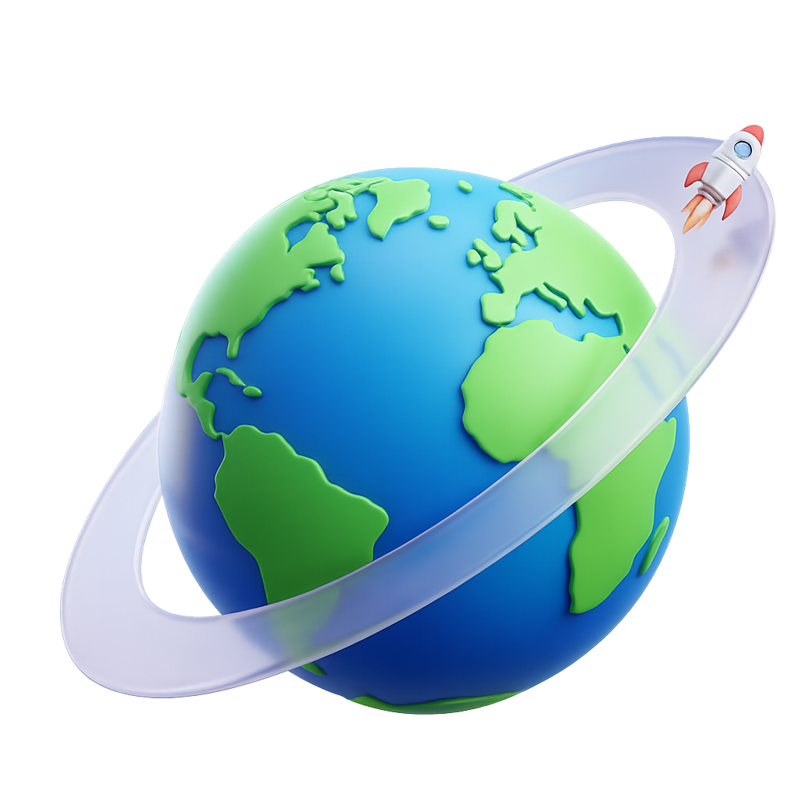
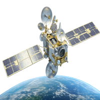

🌍 Órbita
A órbita é o caminho que um objeto percorre ao redor da Terra ou de outro corpo celeste.
Satélites e espaçonaves utilizam diferentes tipos de órbita dependendo da missão, como comunicação, observação ou navegação.
A velocidade e a altitude são fatores essenciais para manter um objeto em órbita estável.

🚀 Estágios
Os foguetes são divididos em estágios para otimizar o uso de combustível e aumentar a eficiência do lançamento.
Cada estágio é responsável por impulsionar o foguete por uma parte da viagem e, após consumir seu combustível, é descartado para reduzir o peso.
Isso permite que a nave alcance maiores altitudes e velocidades.

🛰️ Satélites
Satélites são equipamentos enviados ao espaço para realizar diversas funções, como comunicação, monitoramento climático e navegação.
Eles orbitam a Terra e coletam dados importantes para o nosso dia a dia, sendo fundamentais para tecnologias como GPS, internet e previsão do tempo.